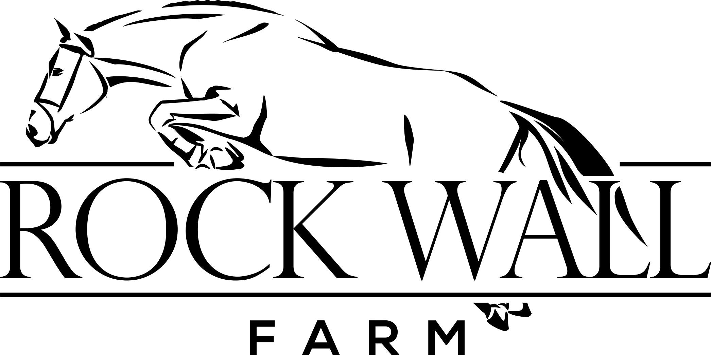
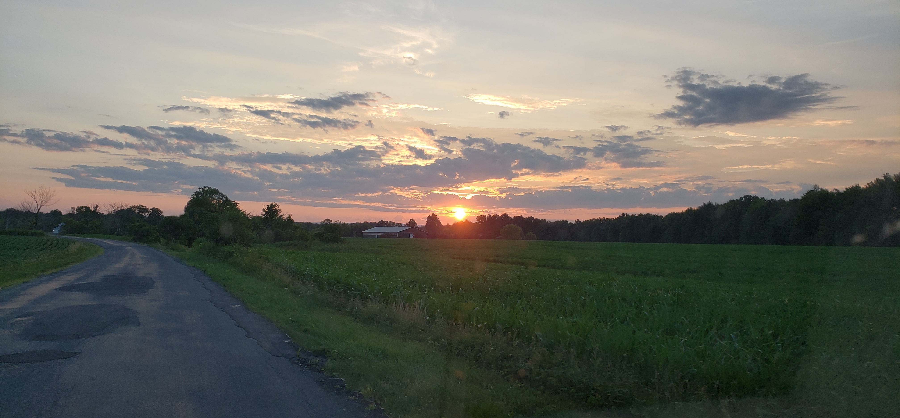
Bitten by the horse bug early, Melissa began riding at age 5 while growing up in Virginia. She showed local hunter shows riding school horses and her own horse until her family moved to New Mexico prior to high school. While in high school, Melissa continued her riding education and began riding low level jumpers until she attended Purdue University. At Purdue, she completed bachelors and masters degrees in Animal Science with a focus in Animal Nutrition. During her undergrad, she also joined the newly formed polo team to continue time in the saddle. After college, though, her career took her to Chicago and horses were put on hold. During this time she met Dusty, who had no idea what he was about to get himself into! After a number of years away from horses, Melissa came back to her first love and began riding at Red Coat Farm where she was first introduced to the premier hunter/jumper world. Taking her renewed excitement back to New Mexico, she and Dusty developed 10 acres to maintain their horses Roc Hudson and Doris Day while working full-time careers. A new job opportunity found the two again on the move to update New York where the horses were boarded at area facilities for a couple of years. When the hour-long commute to the barn became too much, the two decided to purchase and open Rock Wall Farm in July 2018. This endeavor is the culmination of the most important aspects of horse care honed over years of experience as horse owner, rider, boarder, competitor, barn manager, barn owner, animal scientist and overall horse advocate.
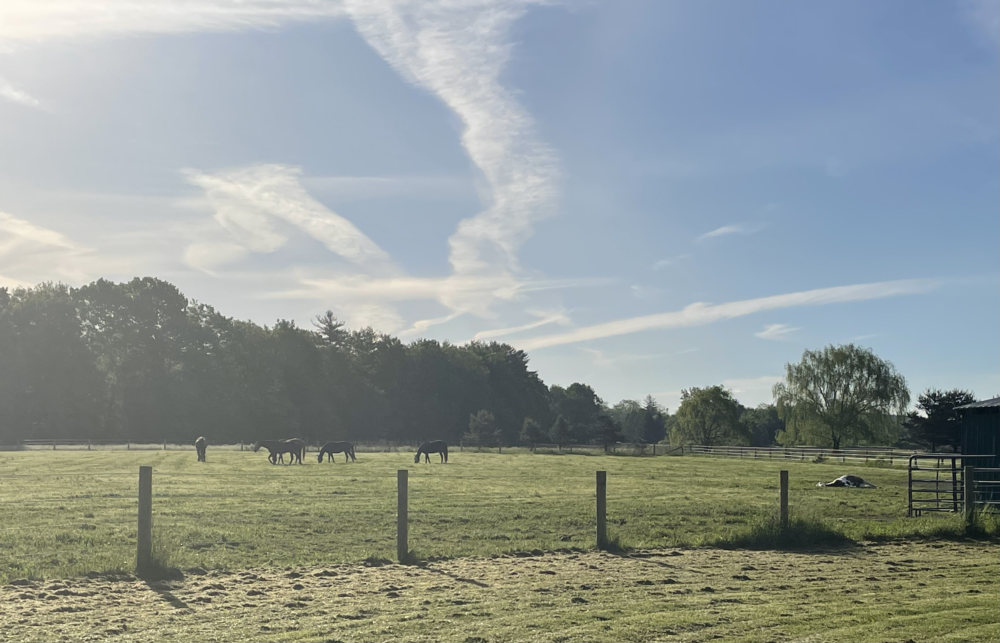
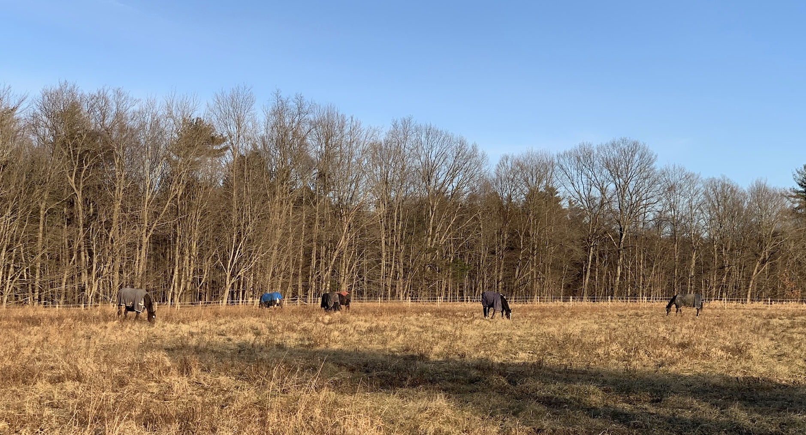
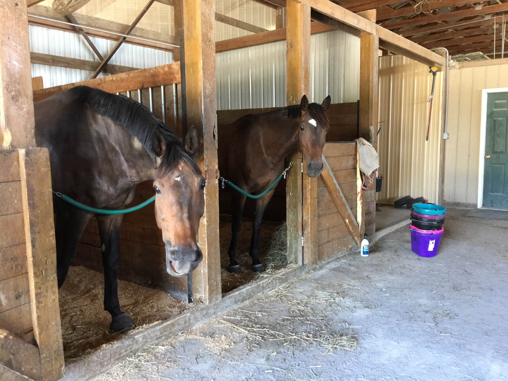
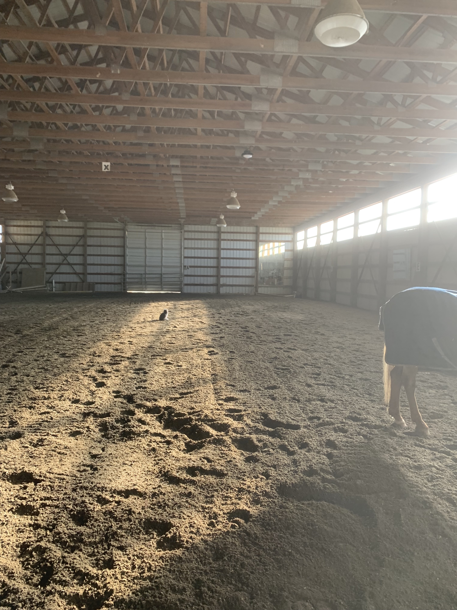
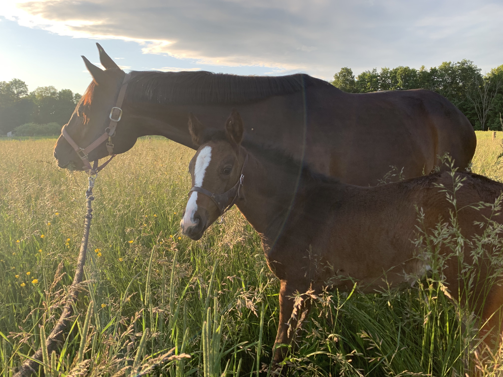
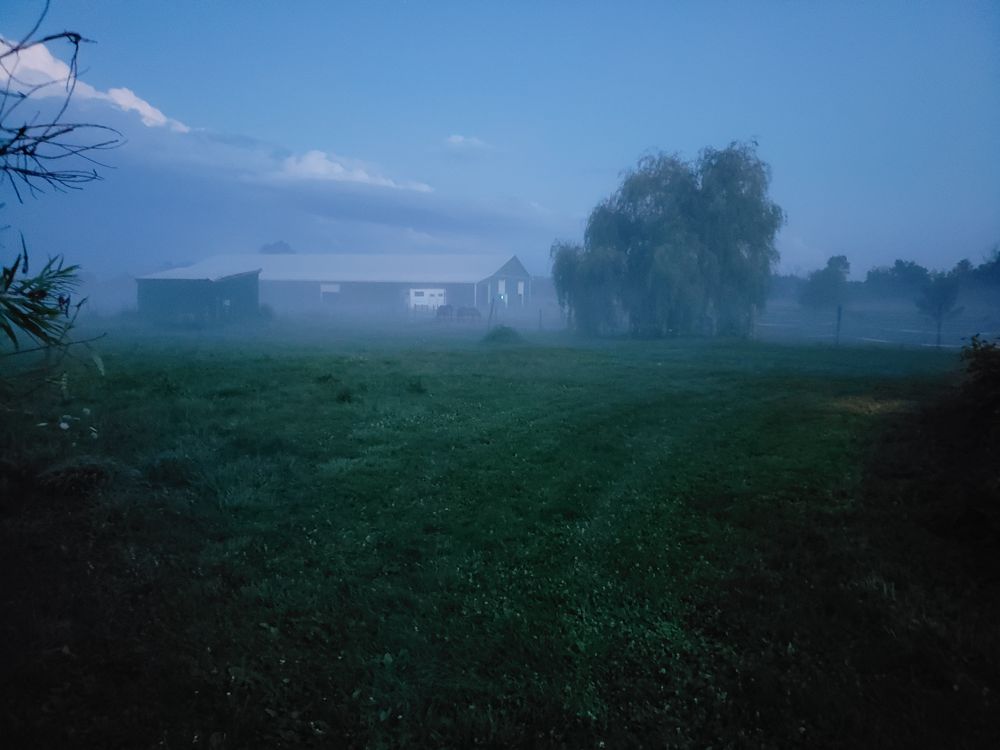
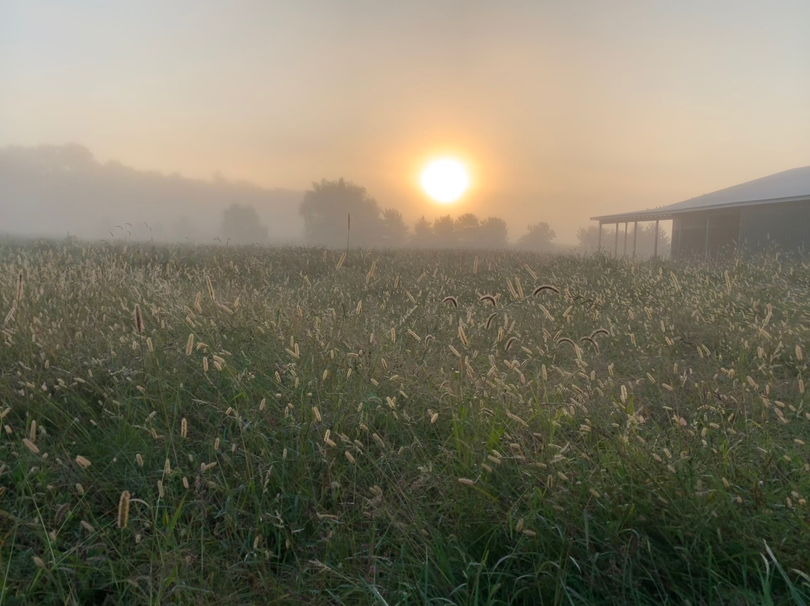
Our priorities for boarders are to provide a low-stress, drama-free environment. Whether a casual or competitive equestrian, we aim to provide an environment to help you achieve your riding goals.
For horses, we value providing plenty of hay and as much turnout as possible with herds designed to let horses be horses, thereby providing for their mental well-being.
Same as Full Board but with reduction in board fee in exchange for agreed upon chores completed monthly
NOTE: Services are subject to changeWe offer lessons from beginner to intermediate students with a focus on strong fundamentals built upon quality flatwork and a natural horsmanship approach. Influences include Anne Kursinski, Beezie Madden, Denny Emerson, and Tik Maynard.
More advanced students can take advantage of visiting instructors.
Please contact us for more details.
In our first winter, we knew we wanted the horses to have access to as close to free-choice hay as possible. The easiest solution was to put out round bales. However, as anyone who has fed round bales before knows, the horses quickly demolished the bales by spreading the hay everywhere, using it as a bedroom, bathroom and seemingly doing everything to it except eat it. That’s when we researched options to help save hay wastage. The first week we had the Hay Bonnets, our hay wastage dropped from about 50% to less than 10%. The hay stayed where it was supposed to and we were moving bales way less often. Our Hay Bonnets are still in use through the summer to help horses adjust from hay to fresh grass and to always provide roughage. Our Hay Bonnets are in the same shape as day 1 so we couldn’t be happier!
When we couldn’t find a distributor close to the area, we hopped on the opportunity to provide these in the Capital District and Hudson Valley region. Since we are a working farm, sales are by appointment only.
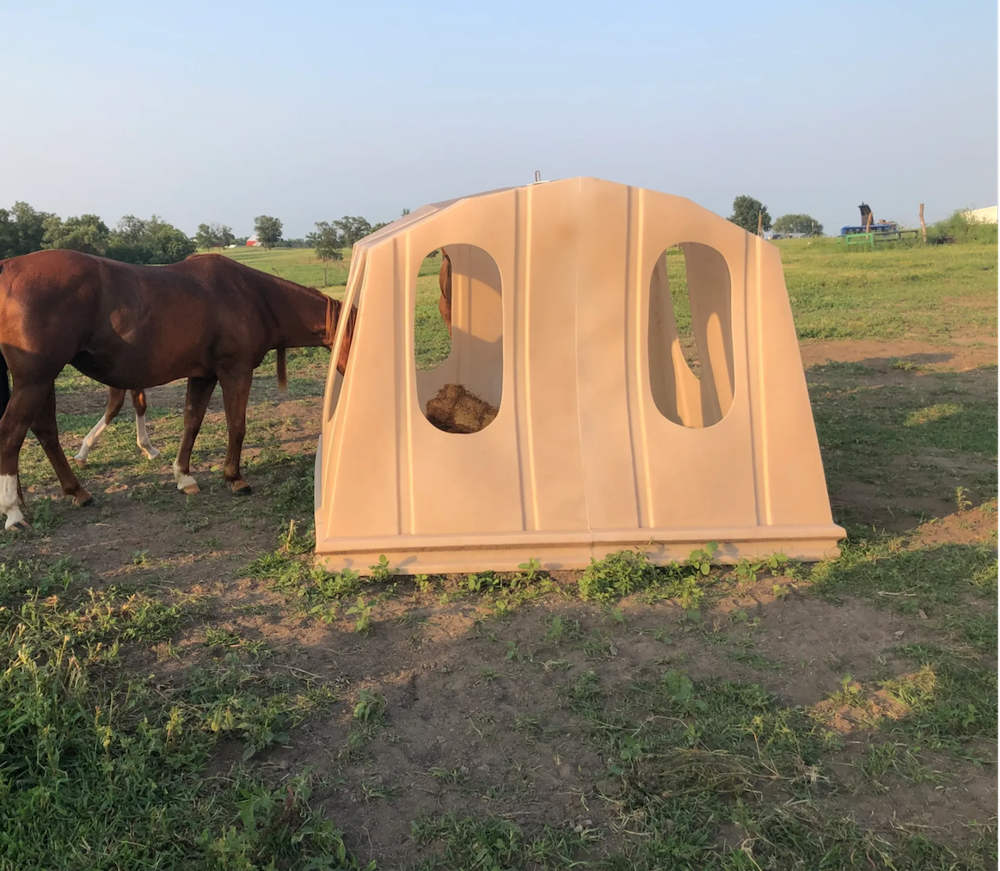
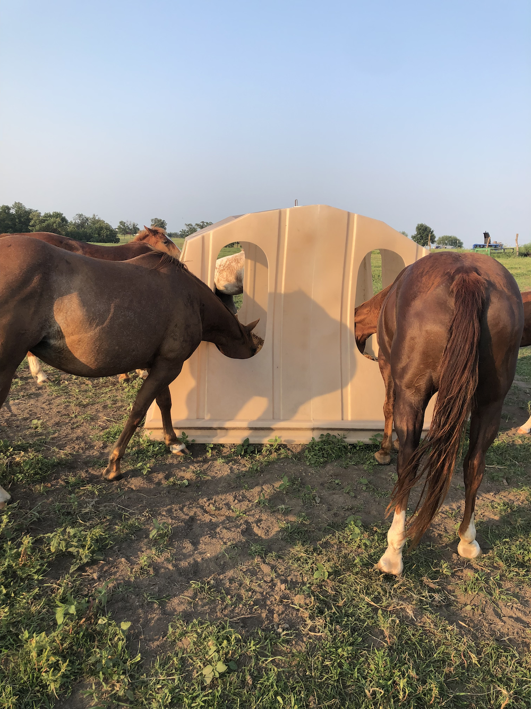
Please contact us for availability. For more information on the benefits of Hay Bonnets please visit haybonnet.com.